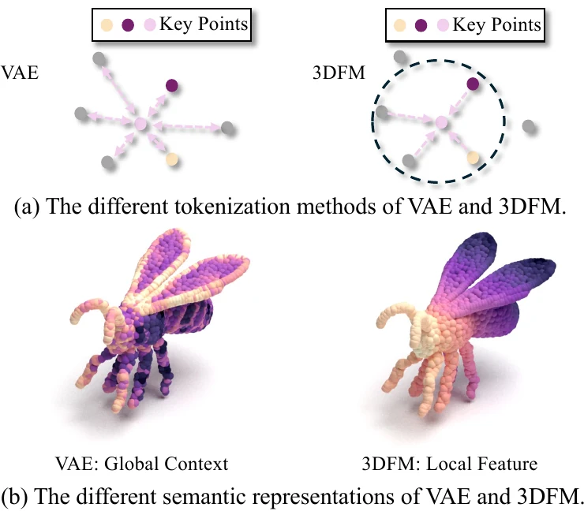
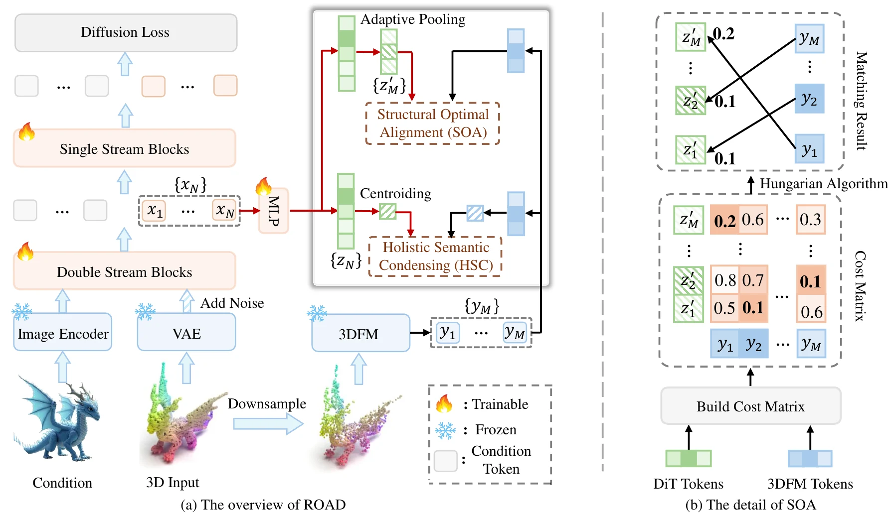
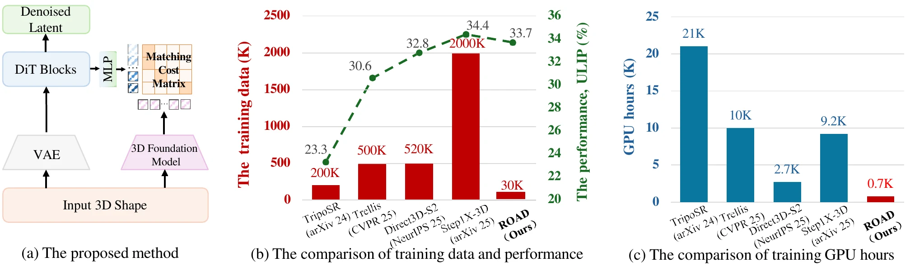
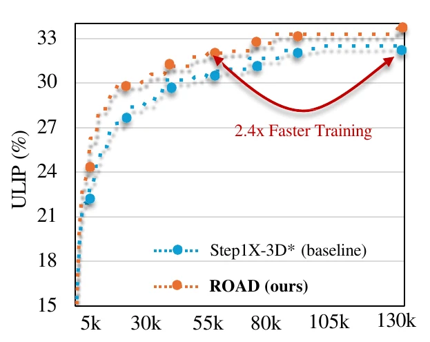

ROAD generates diverse and high-fidelity 3D assets with substantially less training data and computation than large-scale industrial systems.
30Ktraining shapes
8× A100training hardware
2.4×faster convergence
0extra inference cost
Abstract
High-fidelity 3D generation predominantly relies on scaling model capacity and data, which incurs prohibitive computational costs. This paradigm typically requires learning geometry from scratch and overlooks the rich semantic and structural priors already encapsulated in discriminative 3D foundation models. We contend that leveraging the understanding of the 3D world possessed by these discriminative models can significantly reduce generative cost.
To this end, we propose ROAD, a framework that transfers discriminative priors into diffusion transformers through reciprocal-objective alignment. Holistic Semantic Condensing enforces global semantic coherence, while Structural Optimal Alignment formulates fine-grained correspondence as a bipartite matching problem. The 3D foundation model is used only for training-time supervision and introduces no additional inference cost. Compared with the industrial Step1X-3D baseline, ROAD achieves highly competitive generation performance with only 1.5% of the training data.
Motivation
3D Shape Diffusion Models have emerged as a dominant paradigm for generating high-fidelity 3D assets, but their success relies heavily on brute-force scaling. Such systems consume massive datasets and computational resources to establish the mapping between visual conditions and geometric structures, even though discriminative 3D foundation models have already acquired rich semantic and structural knowledge of the 3D world.
Transferring these priors is non-trivial. Point clouds are inherently unordered, and generative and discriminative models employ fundamentally different tokenization strategies. Generative tokens tend to aggregate holistic surface context and remain order-agnostic, whereas foundation-model tokens preserve localized geometric structure. As a result, rigid element-wise alignment lacks a natural one-to-one correspondence.

The representation gap arises from different tokenization mechanisms and the absence of fixed spatial correspondence between the two latent sequences.
Method Overview

ROAD injects discriminative priors from a frozen 3D foundation model into intermediate diffusion-transformer features through two complementary alignment objectives.
Holistic Semantic Condensing
HSC aggregates disordered tokens into unified semantic prototypes through global pooling. This holistic anchor resolves the unordered nature of 3D representations and guides the generative model toward the semantic manifold learned by the foundation model.
Structural Optimal Alignment
SOA preserves fine-grained geometric information by treating local correspondence as a bipartite matching problem. Hungarian matching dynamically pairs tokens according to semantic similarity, avoiding the incorrect assumption of fixed positional correspondence.
Together, the two reciprocal objectives transfer both macroscopic semantic abstractions and microscopic geometric primitives without disrupting the native generative flow.
Main Results

ROAD establishes a strong computation–performance trade-off with 30K public shapes, a 0.65B-parameter model, and a single node of eight A100 GPUs.
Evaluated on the representative Step1X-3D framework, ROAD reaches a Uni3D-Score of 32.3 and a ULIP-Score of 33.7. Effective prior transfer substantially reduces the amount of data and computation required for high-quality generation, demonstrating that semantic alignment can serve as a practical alternative to massive data scaling.

ROAD reaches the baseline's peak performance approximately 2.4× faster.
@misc{luo2026road,
title = {ROAD: Reciprocal-Objective Alignment of
Discriminative Semantics for 3D Shape Generation},
author = {Luo, Xiao and Du, Mingyang and Zhou, Xin and
Feng, Tianrui and Chen, Xiwu and Li, Xiaofan and
Zhang, Jiangning and Liang, Dingkang},
year = {2026}
}